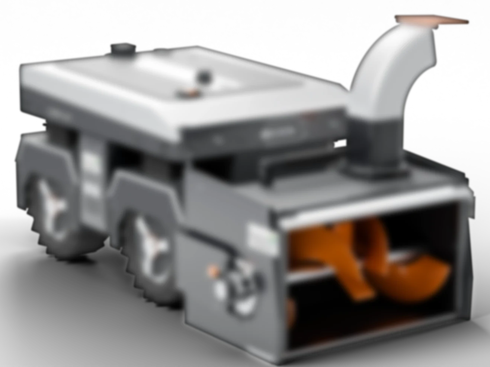
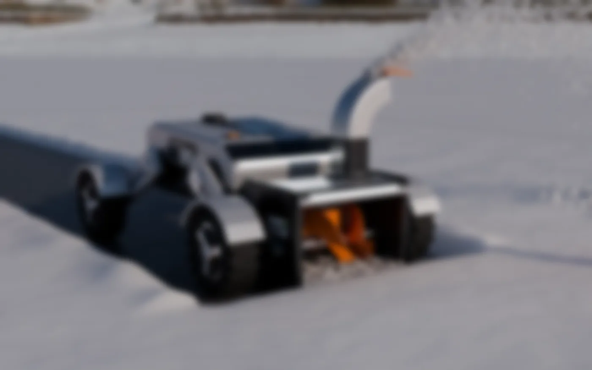
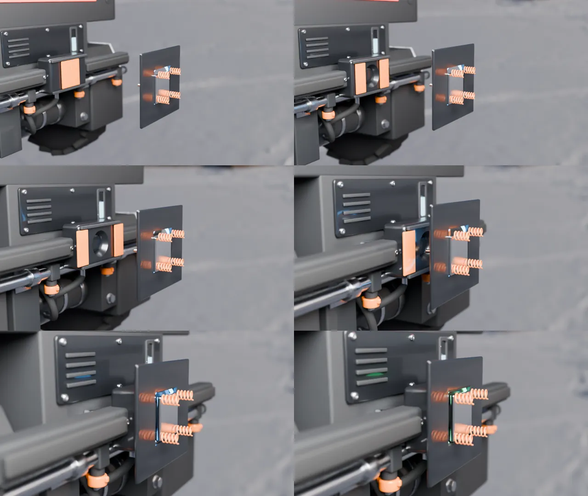
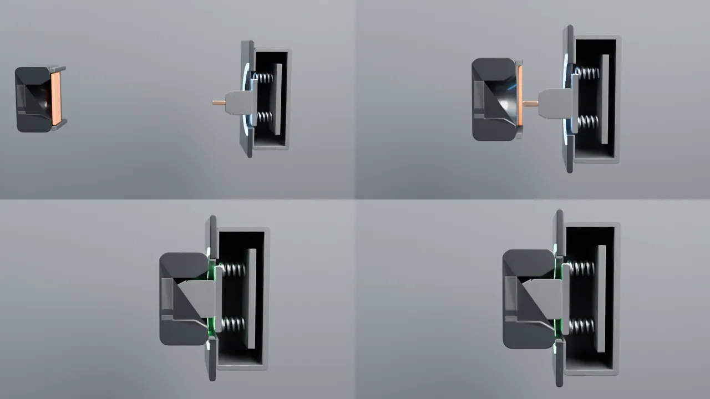

V1
Rejected
Looked like a toy. Box body, stick legs, no fillets. It lasted twelve minutes.
WIMTACH / Hackathon 2026
An electric snow robot for all four seasons. Three days, AI doing the CAD, me directing every decision.

The client's snow robot runs on gas and rubber tracks. The brief was to make it autonomous and useful all year. We split the work by discipline, and I took the mechanical half: the body, how it moves, how it docks and how it is built.
Only an electric robot can charge itself, and real autonomy needs that. It is not cheaper upfront. It wins on running cost.
UWB and RTK stakes at the corners draw an invisible wall that keeps working when snow or grass blinds the cameras.
Tracks tear a lawn every time they turn. Wheels do not, and a pod that lifts 180 mm lets the robot climb out of a plow berm by itself.
The housing rotates 90 degrees and the rotor swaps: auger for snow, flail for grass, brush for leaves. One motor, one shaft.
Electrical and software teammates supplied sensing, compute and the BOM. I fitted their parts inside the machine.
AI did not replace the designer. It changed the job. Give direction, say what is good and what is not, repeat until it is right.
Five steps, repeated about a dozen times. The loop is fast enough that a bad idea costs minutes, not an afternoon.
I write what the machine must be, name the references and set the rules.
MeClaude Code writes one parametric script per version. Change a number, regenerate.
build123dOne STL per material for rendering, and STEP so SolidWorks opens real solids.
STL + STEPAbout 30 seconds for a studio shot, about a minute for a photoreal scene.
Blender, RTX 3080Side by side with the references. I list the 3 or 4 biggest gaps and send them back.
MeThen back to the first step, on a new copy.
# robot.py, the top of the file. Units: mm. WHEEL_D, WHEEL_W = 340, 130 BODY_HALF = 340 # wheel outer width + pod skin AX = 290 # axle x, front +AX, rear -AX LIFT_MAX = 180 # vertical pod travel LIFT = {"snow": 70, "grass": 40, "rotor": 0}
This is why iteration is cheap. Changing the lift travel is one edit, and every render updates.

My estimate for the same scope by hand, in SolidWorks and KeyShot, is about a week of full-time work. It took three days, and a good part of the render time ran while I was away from the keyboard. Below is what I can prove from file timestamps.
From the first file in the project folder to the first rendered robot.
Sep 29, 18:46 to 19:54Four alternative architectures, each a full parametric model, coded and rendered.
Sep 30, 00:03 to 00:33Three dock concepts, 24 still renders, up to three passes each.
Sep 30, 12:53 to 13:14Two animations rendered unattended: 420 of the dock exit and 450 of the connector.
Dock exit: about 17 s a frame, 1080p126 stills across 46 hours, from Sep 29 18:00 to Oct 1 16:00. Flat stretches are sleep and the rest of life.
| Hour starting | Stills |
|---|
Source: modification times of the PNG files in the project's renders folder, animation frames excluded. Scripts and renders were saved as they were made, so the bursts are real.
What the method did not save is the judging. Twelve versions exist because I kept saying no. What it removed was the wait between an opinion and a picture of that opinion.
Real renders in the order they were made, with the time each file was saved. Gold means the idea survived. Gray means I said no.
Rejected
Looked like a toy. Box body, stick legs, no fillets. It lasted twelve minutes.
Rejected
Springs, a light bar and a graphite body. Better parts, same toy: still boxy and low-poly.
Blurred for now, under NDA
Direction kept
The look arrives: flat planes, tight fillets, a two-tone split. Exposed legs and springs still read as a toy car.
Blurred for now, under NDA
Direction kept
Suspension hidden in arm fairings, Altoz-style chute. My verdict: getting very close. Ten gaps still on the list.
Blurred for now, under NDA
Kept as base
Gap list applied: fenders that move with the legs, 60 mm plan radii, a face mask with two cameras, orange under 10%.
00:03 to 00:33Four architectures, coded and rendered in about half an hour. Same base and head, four answers to one question: how does it get over a berm?
Blurred for now, under NDA
Discarded
A passive rocker-bogie climbs about 300 mm with no control. Six hub motors, 30 to 40% more drivetrain cost, and it scrubs lawn when it turns.
Blurred for now, under NDA
Discarded
Bends in the middle, so it does not tear lawn. But the bellows joint has to survive salt, and the turning circle is 3.4 m.
Blurred for now, under NDA
Discarded
Closest to the EcoFlow reference, with the head on polished links. Those links sit exposed to salt and ice, and the robot grows to 1.68 m.
Blurred for now, under NDA
Chosen
One block, wheels tucked into pods, 180 mm vertical lift. Weakest on sealing and cost, strongest as one object. The team picked it.
Blurred for now, under NDA
Kept
Real parts at true size: RealSense D455, Livox Mid-360, ISO 7380 screws, a rear brine boom. Open issues: nozzle overspray, GNSS antenna shadows the LiDAR, no front bumper.
Blurred for now, under NDA
Kept
Head rotation with a spring plunger and rotary damper, plus tool-free blade rods. Rejected inside it: a bolt per blade (needs tools) and snap-in blades (retention risk).
Blurred for now, under NDA
Final
The team's BOM placed inside the machine: battery, BMS, Jetson, tank, actuators and motors. Exploded and annotated in three passes.
All three sit 250 to 300 mm above the ground with a ramp that lands above the snow, so the robot never has to dig itself out.
Blurred for now, under NDA
The drawbridge door becomes the ramp. The cheapest of the three to build: one winch, no lids, no compressor. Risks are icing on the door seal and the door actuator load. This is the one that went into the animation.
Blurred for now, under NDA
A clamshell in the style of a DJI Dock 2. Lowest floor, steepest ramp. Risks: cost, 110 kg of snow load per lid, and wind.
Blurred for now, under NDA
An octagon tunnel with a telescoping ramp and an air knife. The most striking and the most expensive. Risk: ice in the ramp cassette.
The snow head strikes any ramp steeper than about 13 to 14 degrees. Either the head lifts into its transport pose before docking, or the ramp stays at 13 degrees or less.
My own cost table is blunt. At production cost multiples, all three docks cost more than a complete Yarbo robot. A consumer would not pay that, so the next step is a lean version without the extras.
Only red and orange springs glowing are visible. Nothing visibly connects to anything. My feedback after watching it


Estimates are marked as estimates. The one that mattered most came out of a short calculation.
| Rolling resistance in snow (Crr 0.15) | 162 N |
|---|---|
| Auger intake (estimate) | 150 N |
| 10% slope | 108 N |
| Total drive force | ~420 N |
| Traction, bare tires on packed snow (μ 0.25) | 270 N, not enough |
| Traction with chains (μ 0.45) | 486 N, +16% |
| Torque per wheel | ~18 N·m at ~28 rpm |
Change the mass and the slope. Drive force, torque and traction update.
The decision the numbers drive. The robot is traction-limited, not motor-limited. So it clears early, when snow is thin, it runs chains in winter, and it keeps its weight over the wheels. The blower also takes about 80% of the energy, so it sets the battery size, not the wheels.
This is a concept, and I would rather say where it is weak than have someone find it.
Built with Claude Code (parametric CAD and render scripts), build123d, Blender Cycles and Python. Every design call on this page is mine.